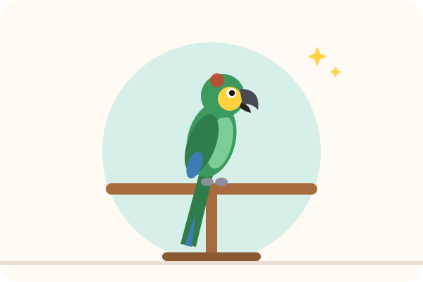

⭐ Le renforcement positif
Récompenser immédiatement le comportement souhaité pour qu'il se reproduise. Simple, efficace et sans stress pour l'animal.
Lire la méthode →Éduquer un animal, c'est possible en douceur ! Chien, chat, lapin, perroquet ou furet : découvrez les méthodes d'éducation qui marchent vraiment, expliquées pas à pas, et le matériel utile pour vous lancer.

Chaque espèce apprend différemment. Commencez par le guide adapté.

Assis, rappel, marche en laisse, propreté, aboiements : le programme complet du chiot à l'adulte.

Litière, griffades, venir à l'appel, caisse de transport et tours au clicker.

Propreté, manipulation en douceur et jeux d'agility pour lapins, rats et furets.

Monter sur la main, ciblage, rappel au perchoir et méthode du modèle-rival.
Elles sont validées par la recherche en comportement animal et fonctionnent sur presque toutes les espèces.
Récompenser immédiatement le comportement souhaité pour qu'il se reproduise. Simple, efficace et sans stress pour l'animal.
Lire la méthode →Un petit « clic » marque l'instant exact de la bonne action. Idéal pour apprendre vite et avec précision.
Lire la méthode →Guider l'animal avec une friandise pour l'amener dans la position voulue, puis retirer progressivement le leurre.
Lire la méthode →La méthode de référence contre les peurs : bruit, voiture, congénères, toilettage, vétérinaire…
Lire la méthode →Trois accessoires suffisent pour commencer n'importe quelle méthode à base de récompense.
Quelques euros pour un outil qui accélère l'apprentissage. Choisissez-en un avec dragonne ou bracelet.
Voir les clickersLes récompenses toujours à portée de main : c'est ce qui fait la différence en balade.
Voir les pochettesPetites, molles et très appétentes : l'animal les mange en une seconde et reste concentré.
Voir les friandises
4 questions pour recevoir les méthodes, articles et matériel adaptés.

Calculez l'âge de votre chien ou chat et découvrez les conseils pour son étape de vie.
🍎Chocolat, banane, fromage… 37 aliments vérifiés pour votre chien et votre chat.
🏷️Notre générateur de noms de chien et de chat, avec vos favoris.
🐶Un exercice par jour pour poser les bases en douceur, à cocher.
💶Le coût de votre chien ou chat par mois, par an et la 1re année.
🤔6 questions pour trouver le compagnon qui vous correspond.
🐾Berger australien, labrador, maine coon… caractère, besoins et santé.
🖨️Planning propreté, check-list chiot, aide-mémoire : en PDF, sans inscription.
Dès l'arrivée de l'animal. Un chiot ou un chaton apprend dès 8 semaines avec des séances très courtes (2 à 5 minutes). Un animal adulte ou âgé peut lui aussi apprendre toute sa vie.
Mieux vaut 2 à 3 séances de 5 minutes qu'une longue séance de 30 minutes. Arrêtez toujours sur une réussite.
Elles peuvent stopper un comportement sur le moment, mais les études montrent qu'elles augmentent le stress, la peur et le risque d'agressivité. Les vétérinaires comportementalistes recommandent les méthodes basées sur la récompense. Voir pourquoi.
En cas d'agressivité, de peur intense, de malpropreté soudaine ou de changement brutal de comportement : consultez d'abord votre vétérinaire (une douleur peut en être la cause), puis un éducateur ou un vétérinaire comportementaliste.